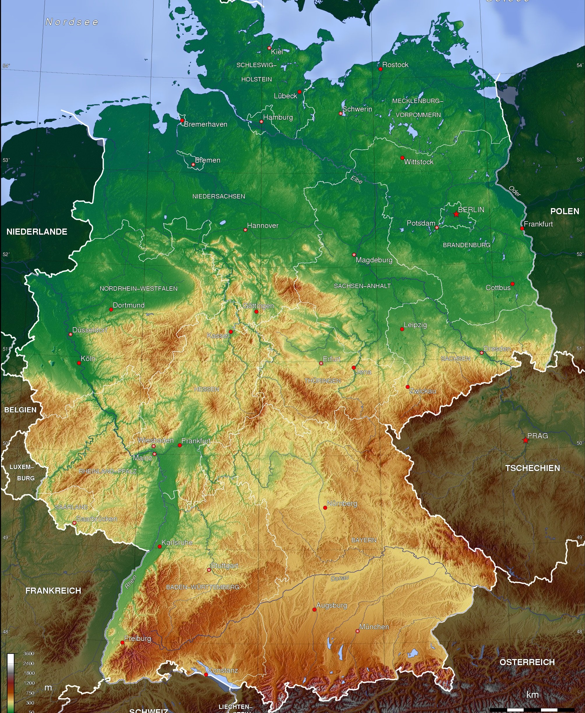
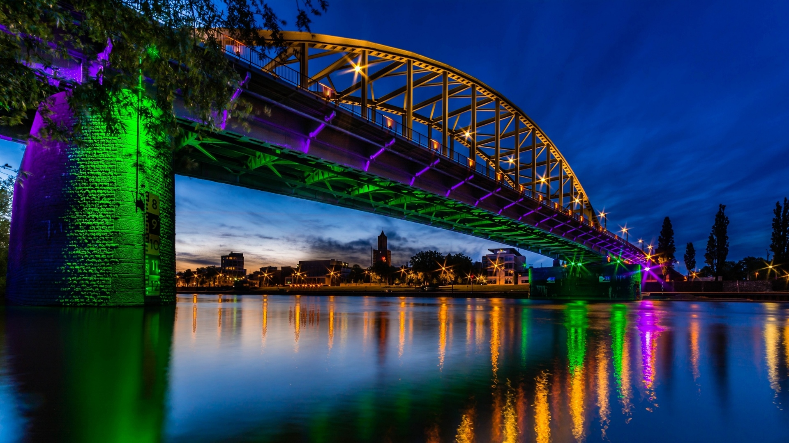
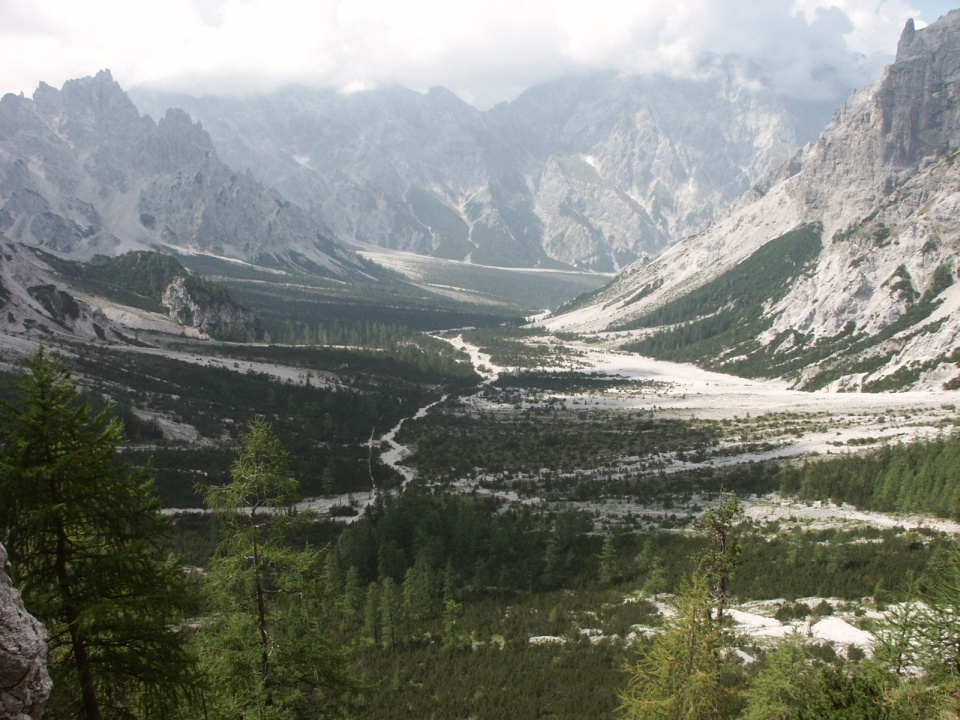

География Германии
-
Рельеф
Северная часть Германии представляет собой сформировавшуюся во время ледникового периода низменную равнину (Северо-Германская низменность, самая низкая точка — Нойендорф-Саксенбанде в Вильстермарше, 3,54 м ниже уровня моря). Поверхность Северно-Германской низменности сохранила следы древнего оледенения - цепочки невысоких моренных гряд и холмов. Западную часть низменности занимают болотистые низины - марши, образование которых вызвано опусканием платформы. В центральной части страны к низменности с юга примыкают покрытые лесом предгорья, а южнее начинаются Альпы (самая высокая точка на территории Германии — гора Цугшпитце, 2 962 метра.
-
Реки и озёра
По территории Германии протекает большое количество рек, наиболее крупными из которых являются Рейн, Дунай, Эльба, Везер и Одер, реки соединены каналами, наиболее известный канал — Кильский, который соединяет Балтийское и Северное моря. Кильский канал начинается в Кильской бухте и оканчивается в устье реки Эльба. Самое крупное озеро в Германии — Боденское, площадь которого 540 км², и глубина 250 метров.
-
Климат

Германия находится в умеренном климатическом поясе, на севере климат морской, южнее переходит в умеренно-континентальный.
С этим связано то, что погода часто носит переменчивый характер. Посреди лета может быть тепло и солнечно, но уже на следующий день может стать холодно и пойти дождь. По-настоящему экстремальные природные явления (сильные засухи, торнадо, штормы, сильный мороз или жара) относительно редки.
Средние температуры июля от +14 в горах до +22 °C в долинах. Средние температуры января от +4 в долинах до −5 °C в горах. Среднегодовая температура +5-+10 °C. Самая низкая температура в Германии наблюдалась в прошлом веке на её юге, в горной части страны, на высоте 1601 метр над уровнем моря 47 северной широты, у озера Фунтензи, и составила −46 °C.
-
Особо охраняемые природные территории
В Германии насчитывается 14 национальных парков, 19 биосферных резерватов, 95 природных парков и множество других охраняемых природных территорий и памятников природы.